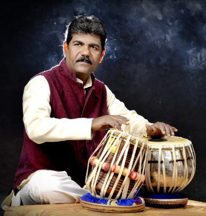
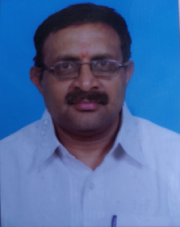

<div class="container pt-5">
  <div class="container-block">
    <h2 class="page-title bottom-line">TABLA</h2>
    <h5 class="page-title all-caps">Pandith Ramappa P Hoogar</h5>
    <div class="wrapper">
      <div class="img-wrapper">
        
      </div>
      <div>
        <p>
          Ramappa P. Hoogar is a skilled Tabala artist playing for reputed
          Hindustani musicians. He started his training with Pt. Shivamurthy
          Bhuva and went on to Gadag to learn under Padmabhushana Pt. Dr.
          Puttaraja Gawai for over 10 years. He completed his Vidwath in 1994
          and is a reputed AIR ‘B’ Grade artist for Tabala. With advanced
          qualifications in music and training under renowned gurus, he has been
          passionately engaged in the field since 1989. He has performed
          numerous prestigious cultural and musical events at both regional and
          national levels, showcasing his mastery of tabala. Alongside his
          performance, he is dedicated to teaching and mentoring aspiring
          musicians fostering a deep appreciation for Indian Classical music.
          His contributions to promote and preserve the rich tradition of
          Hindustani classical music is time tested with a huge number of
          students trained by him at BVB since more than 10 years.
        </p>
      </div>
    </div>
    <div class="clear"></div>

    <h2 class="page-title bottom-line mt-5">VIOLIN / MANDOLIN / KEYBOARD</h2>

    <h5 class="page-title all-caps">Vidwan Thyagaraju M</h5>
    <div class="wrapper">
      <div class="img-wrapper">
        
      </div>
      <div>
        <p>
          Vidwan Thyagaraju is a violinist and vocalist trained under great
          Gurus, Dr. Gowri Kuppuswamy, Vidwan Mahadevappa and Dr. Mysore
          Manjunath. He is teaching for more than 25 years in Mysore. He has a
          rich qualification of MA in music(violin and vocal) from Bangalore
          University, Vidwath in violin (2nd rank), senior in Karnataka Music.
          He has a Grade 5 in western music from Trinity College of London. He
          is a regular performer in instrumental bands and for musical concerts
          at Mysore and far away places.
        </p>
      </div>
    </div>
    <div class="clear"></div>

    <h5 class="page-title all-caps mt-5">Vidwan Shanthkumar M V</h5>
    <div class="wrapper">
      <!-- <div class="img-wrapper">
        
      </div> -->
      <div>
        <p>
          Vidwan Shanthkumar is an accomplished violin maestro, with over 30
          years of experience. He has learnt from Vidwan Mahadevappa and Vidwan
          H K Narasimha Murthy and has honed his skills as a vivid performer for
          many years. He has completed his Bachelors in Music from University of
          Mysore.
        </p>
      </div>
    </div>
  </div>
</div>
